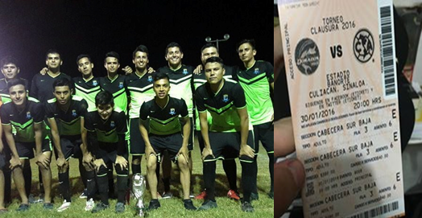

Universidad |
|
historia de la preparatoria
Inicio
|
Las historias más nuevas, mis años en la universidad, mi graduación de la preparatoria, después donde nos proclamamos tres veces seguidas campeones de un torneo uruguayo, con finales emocionantes, hasta ahorita seguimos siendo el campeón y lo mejor, ir a ver por primera vez al equipo más ganador de México, el rey de copas, América Cf, cuando supe que Dorados había ascendido a primera división supe que era mi oportunidad para poder ver jugar a mi equipo favorito y para mi buena suerte tengo un padrino y un amigo viviendo en Culiacán y desde ese día estuve al tanto de cuando iba a ser la fecha, nomás publicaron el calendario, me di cuenta que dorados iba de visita primero así que tenía que esperar para el clausura para ver al América y pero no pasaría mucho porque nomas empezando el año un 30 de enero América vendría a jugar de visita a dorados, mi amigo Said tenía un amigo que era trabajador del estadio y con el conseguiríamos boletos para poder ir al juego, y fue así, el hablo con su amigo, nos dijo que le mandáramos el dinero para el poder adquirirlos, el día del juego ya estábamos listos como a las 12 para poder llegar a tiempo al estadio, nos fuimos en el carro de mi hermano, como a eso de la 1:30 llegamos a Culiacán como a eso de las 5 de la tarde y el partido era a las 8 de la noche, todavía había que esperar 3 horas, 2 en casas y una en el estadio, fue la primera vez que entre a un estadio de primera división, nomás llegando al estadio ya sentía la emoción, ver a los jugadores calentar fue lo que me hizo pensar que había valido la pena esperar por este momento, nomás empezó el partido como al minuto 25 el América ya se ponía adelante con gol de Pablo Aguilar de cabeza a centro de Rubens Sambueza, el segundo tanto llego por parte de Osvaldo Martínez que nuevamente Rubens Sambueza centrado, Pablo Aguilar se la dejo de cabeza a Osvaldo que soltó el disparo y puso el 2-0 antes del descanso, el tercer gol llego por parte del delantero Oribe Peralta que con gran desborde y asistencia de Andrés “el rifle” Andrade, ese partido lo recuerdo muy bien y para mí fue uno de los mejores días.
|  |
|